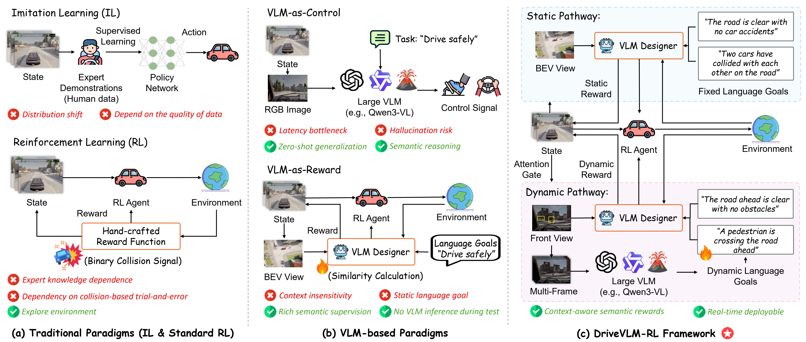
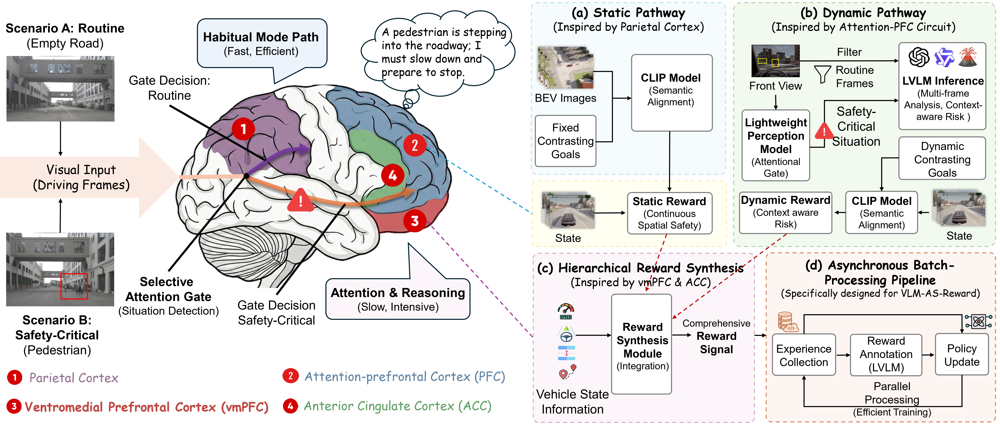
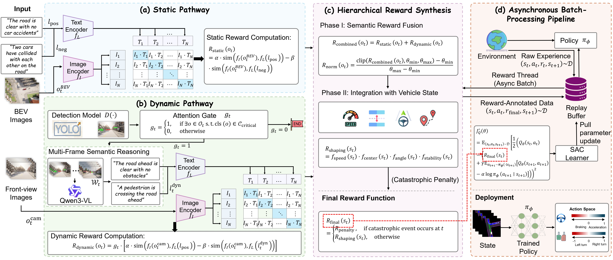
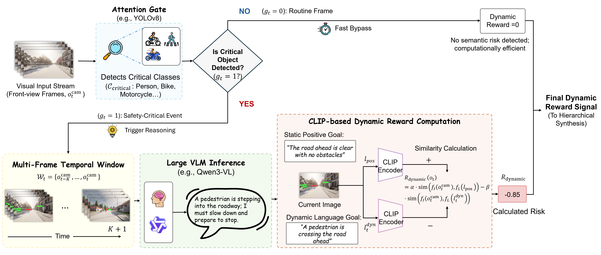
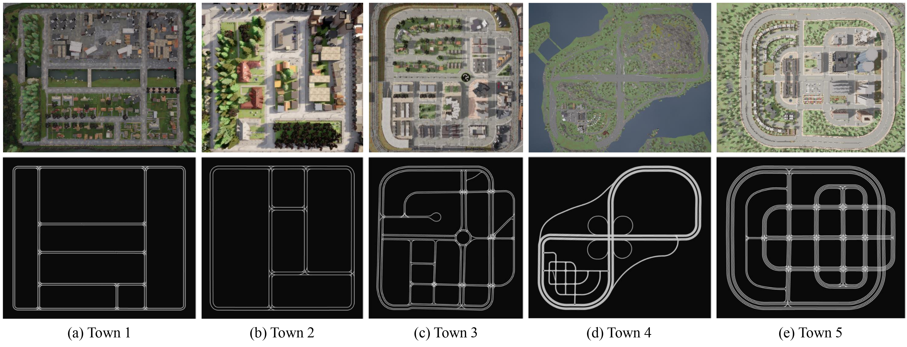
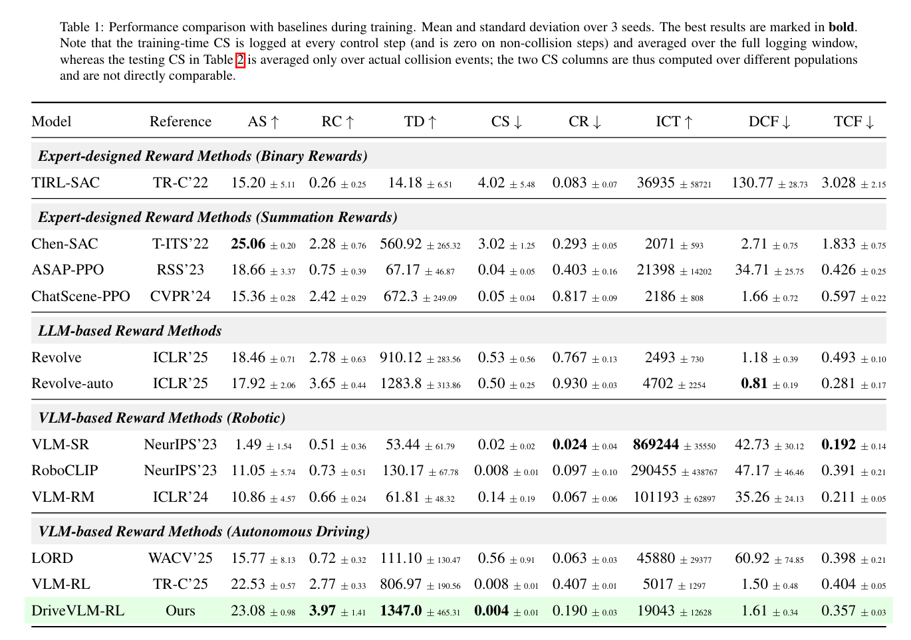
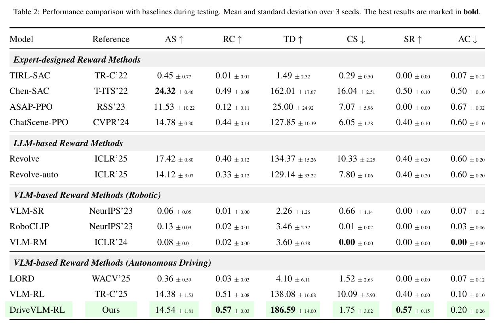
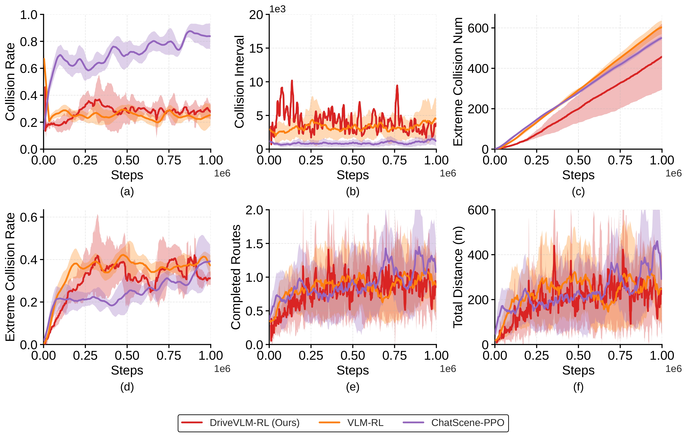
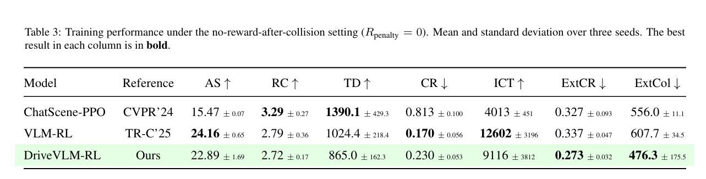
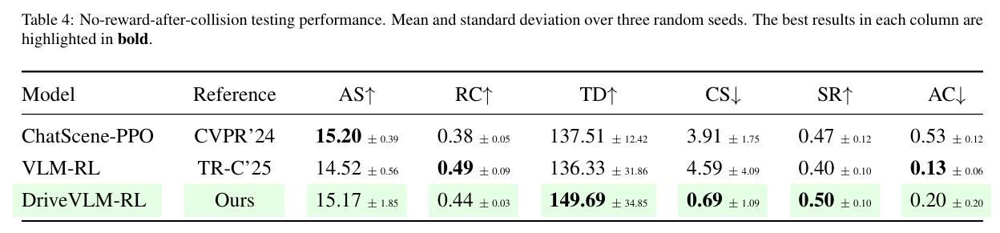

DriveVLM-RL:
DriveVLM-RL:

1. Dual-Pathway VLM-Guided RL. A Static Pathway (CLIP with fixed language goals) and a Dynamic Pathway (attention-gated LVLM reasoning) bring human-like semantic reasoning to AV safety, beyond collision-based rewards.
2. Attention-Gated Efficiency. A lightweight detector triggers costly LVLM inference only for safety-critical frames, and all VLMs are removed at deployment for real-time control.
3. Hierarchical Reward & Async Training. Static similarity, dynamic multi-frame reasoning, and vehicle state fuse into dense, proactive rewards, with async training decoupling VLM inference from environment interaction.
4. State-of-the-Art Safety. Cuts collision severity from 10.09 to 1.75 km/h over the strongest VLM baseline, and stays safe under no-reward-after-collision and unseen towns.

Routine scenes are handled by a fast habitual pathway, while safety-critical situations trigger selective attention and higher-level semantic reasoning in the prefrontal cortex, motivating DriveVLM-RL's dual-pathway reward design.

(a) Static Pathway: CLIP-based semantic alignment with contrasting language goals for continuous spatial safety. (b) Dynamic Pathway: an attention gate triggers multi-frame LVLM reasoning only in safety-critical situations. (c) Hierarchical reward synthesis: static and dynamic signals are fused with vehicle-state factors. (d) Asynchronous pipeline: reward computation is decoupled from environment interaction and policy learning.

Routine frames bypass semantic reasoning; safety-critical frames trigger multi-frame LVLM inference to produce a risk description, which is converted into a dynamic reward via CLIP-based semantic similarity.

CARLA towns used to evaluate cross-town generalization.
Ego-vehicle observations in urban traffic: BEV representation, semantic segmentation, and camera views with diverse traffic participants.
Mean ± std over 3 seeds; best in bold. AS: avg. speed (km/h), RC: route completion, TD: total distance (m), CS: collision speed (severity), CR: collision rate, ICT: inter-collision time (steps), DCF: collisions/km, TCF: collisions/1000 steps, SR: success rate, AC: avg. collisions.

Full 12-method training-phase comparison (Table 1 in the paper). DriveVLM-RL attains the best route completion, total distance, and training-time collision severity while remaining navigation-capable. (Training-time CS is logged every step and is not directly comparable to the testing CS below.)

Full 12-method testing-phase comparison on unseen Town 2 routes (Table 2 in the paper). Among methods that actually complete routes, DriveVLM-RL achieves the highest success rate and route completion, drives the farthest, and keeps collision severity low.

With the explicit collision penalty removed (Rpenalty = 0), DriveVLM-RL still keeps the lowest collision severity and highest success rate, indicating the dual-pathway semantic reward instills safe behavior rather than relying on a hand-tuned penalty.


@article{huang2026drivevlm,
title = {DriveVLM-RL: Neuroscience-Inspired Reinforcement Learning with Vision-Language Models for Safe and Deployable Autonomous Driving},
author = {Huang, Zilin and Sheng, Zihao and Wan, Zhengyang and Qu, Yansong and You, Junwei and Jiang, Sicong and Chen, Sikai},
journal = {arXiv preprint arXiv:2603.18315},
year = {2026}
}